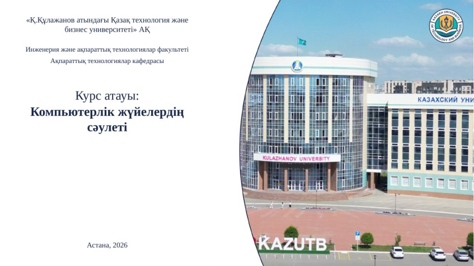
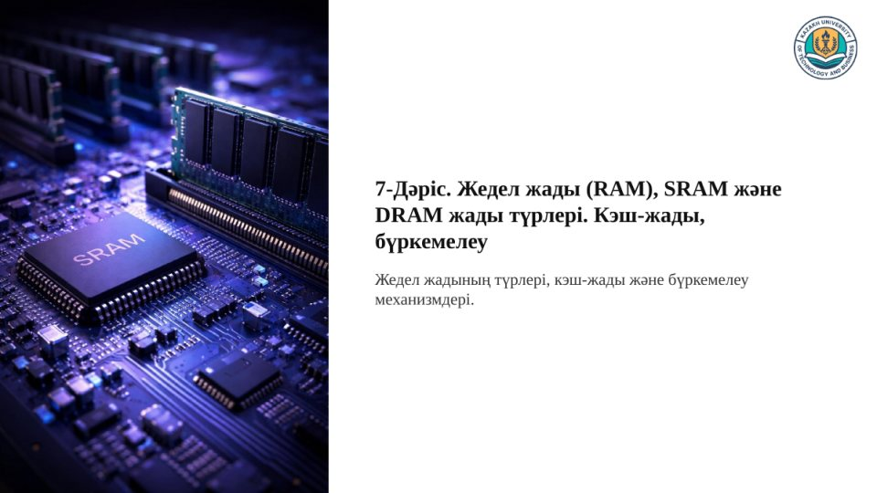
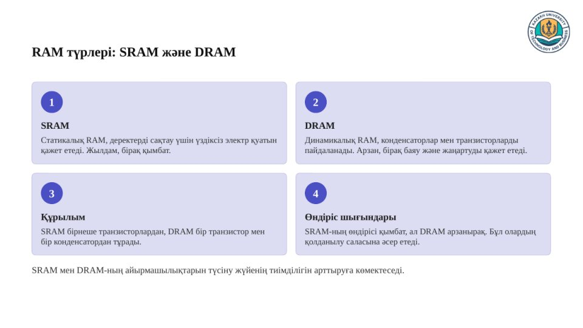
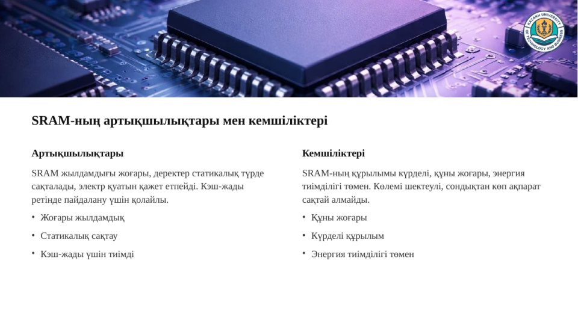
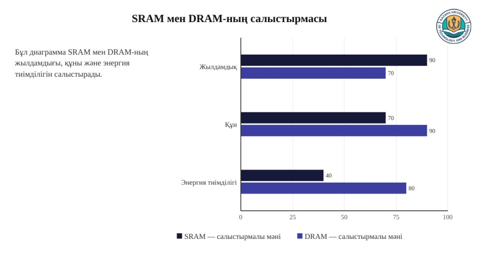
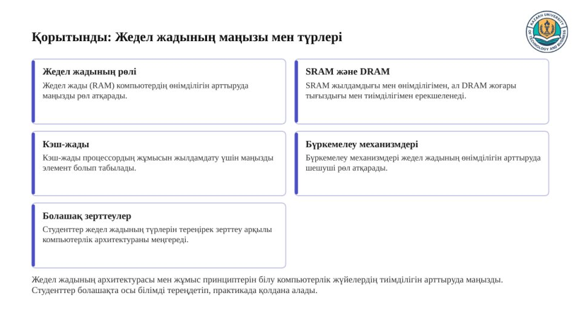

| Наименование | AI-ассистент преподавателя: генерация презентаций |
| Организация | Казахский университет технологии и бизнеса им. К. Кулажанова (КазУТБ) |
| Где работает | CRM КазУТБ (crm.kaztbu.edu.kz), раздел «AI-ассистент → Ассистент преподавателя». Доступ после входа в систему. |
| Тип агента | Генеративный ИИ-ассистент. Готовит черновик презентации, который преподаватель проверяет и при необходимости правит в PowerPoint (human-in-the-loop). |
| Связь с другими агентами | Работает после агента генерации лекций и строит слайды по готовому конспекту лекции. |
| Пользователи | Преподаватели, заведующие кафедрами, деканы |
| Модели ИИ | OpenAI GPT-4o mini (тексты слайдов и заметки докладчика) и OpenAI GPT Image 1.5 (иллюстрации) через API |
| Статус | Тестирование на тестовом сервере CRM с 20.10.2026. Пилотная эксплуатация начнётся после выпуска в рабочую версию CRM. |
Подготовка презентации к лекции отнимает у преподавателя много времени: материал нужно разбить на слайды, сформулировать короткие тезисы, подобрать иллюстрации и оформить всё в фирменном стиле университета.
Агент готовит черновик презентации за несколько минут: слайды по содержанию лекции, заметки докладчика к каждому слайду и иллюстрации в шаблоне КазУТБ. Преподаватель просматривает результат в браузере и скачивает файл PowerPoint для доработки.
| Макет | Когда используется |
|---|---|
| Текст и список | Определение главного понятия и его основные характеристики |
| Таймлайн | Эволюция, история, этапы процесса |
| Баннер и две колонки | Сравнение двух вариантов с иллюстрацией во всю ширину слайда |
| Карточки | Свойства, виды, преимущества и недостатки |
| Текст и иллюстрация | Ключевая идея раздела |
| Диаграмма | Качественное сравнение технологий или методов по критериям |
| Пирамида | Уровни иерархии |
| Показатели | Два понятия и три ключевых числа |
| Шаги | Этапы, области применения |
| Иерархия | Уровни сверху вниз |
| Заключение | 4–6 итоговых выводов |
Макеты чередуются по плану презентации, чтобы слайды не были однотипными. Если содержание раздела не подходит под макет, CRM упрощает его: например, при двух этапах вместо таймлайна строятся карточки.






Презентация «Жедел жады (RAM), SRAM және DRAM жады түрлері. Кэш-жады, бүркемелеу» на казахском языке, 15 слайдов. Создана агентом 20.10.2026 без ручной правки.
Шаги 3 и 5 выполняются во внешнем сервисе OpenAI, остальные — на сервере CRM КазУТБ. Генерация идёт по шагам в фоновой очереди; после сбоя она продолжается с места остановки.
| Серверная часть | Laravel 12 (PHP 8.3), фоновая очередь Laravel |
| Интерфейс | React 18, Inertia.js, Tailwind CSS; предпросмотр слайдов в браузере |
| Файл презентации | PhpPresentation, PPTX 16:9; шрифт Times New Roman, логотип и фото корпуса КазУТБ |
| Модели ИИ | OpenAI Chat Completions API, GPT-4o mini, режим JSON; OpenAI Images API, GPT Image 1.5, 1024×1536 и 1536×1024 пикселей |
| Хранение | MySQL 8 — слайды в формате JSON; иллюстрации — в закрытом файловом хранилище CRM |
Системная инструкция задаёт модели следующие правила:
| Что уходит во внешний сервис | Дисциплина, тема, аудитория, пожелания преподавателя, текст конспекта лекции, названия факультета и кафедры; для иллюстраций — короткое описание сцены на английском языке. ФИО, логин и email из учётной записи CRM не передаются. |
| Персональные данные | В интерфейсе есть предупреждение не указывать персональные данные студентов и сотрудников. |
| Хранение | Слайды хранятся в базе CRM, иллюстрации — в закрытом хранилище и показываются только автору. Файл PPTX собирается при скачивании и не хранится. При удалении материала удаляются и иллюстрации. |
| Доступ | Только по ролям: преподаватели, заведующие кафедрами, деканы и администраторы. Каждый видит только свои материалы и может их удалить. |
| Лимиты | 10 генераций в день на пользователя (общий лимит с агентом лекций), не более 10 запусков в минуту, до 8 иллюстраций на презентацию. |
| Контроль затрат | По каждому материалу сохраняется расход токенов текстовой модели; для иллюстраций — модель и число попыток. |
| Отключение | Агент и генерация иллюстраций отключаются параметрами конфигурации без изменения кода. Без иллюстраций презентация собирается из текстовых макетов. |
| Показатель | Результат пробных генераций |
|---|---|
| Число слайдов | Ровно столько, сколько запрошено: 12, 15 и 16 |
| Разнообразие макетов | 11 разных макетов в презентации на 12 слайдов, 12 — на 15–16 слайдов |
| Иллюстрации | 4–5 на презентацию; все 47 созданы с первой попытки, 8–12 секунд на картинку |
| Время | 25–45 секунд на слайды и иллюстрации, без учёта ожидания в очереди |
| Расход токенов | Около 15 тыс. на презентацию из 15 слайдов: 11,5 тыс. входных и 3,8 тыс. выходных |
| Размер файла | 0,9–1,3 МБ на 12–16 слайдов с иллюстрациями |
В пилотный период отслеживаются: